Let's be honest: cybersecurity can sometimes feel like an endless cycle of technical documentation, security frameworks, policies, acronyms and compliance requirements. Important? Absolutely. Exciting? Not always!
But who said learning cybersecurity has to be boring? What if you could test your knowledge, complete missions, earn experience points (XP), build winning streaks and unlock new levels while actually having fun?
That's exactly why I created CyberQuiz, an interactive cybersecurity quiz available on my personal website, designed to make cybersecurity learning more engaging, practical and accessible.
Whether you're just starting your cybersecurity journey, already working in the industry, or simply curious about staying safe in an increasingly connected world, CyberQuiz gives you an opportunity to put your knowledge to the test, develop your skills and challenge yourself along the way.
And it's not just about answering questions. There are missions to complete, ranks to achieve, streaks to maintain and a Daily Challenge waiting for you.

What Exactly Is CyberQuiz?
CyberQuiz is an interactive, scenario-based cybersecurity learning experience that combines knowledge testing, practical learning and gamification.
Its purpose goes beyond simply asking questions and checking whether you selected the correct answer. It encourages you to think critically, recognise potential threats, understand security principles and make better-informed security decisions.
Questions cover a variety of cybersecurity domains, from everyday security awareness to more advanced technical and strategic concepts.
Each question is an opportunity to test what you know, identify knowledge gaps and strengthen your understanding.
The idea is simple: learn, earn XP, complete missions, build your streak and progress through five increasingly challenging cybersecurity ranks.
Five Progressive Levels: What's Your Cybersecurity Rank?
One of the main features of CyberQuiz is its five progressive ranks. As you complete missions and accumulate experience points (XP), you advance through increasingly challenging levels.
Each rank represents a different stage of cybersecurity knowledge, practical understanding and security judgement. Think of it as your own cybersecurity progression journey!
🥉 1. Associate — Security Fundamentals
Score: 0–599 XP
Every cybersecurity journey needs a solid foundation. The Associate level is where you start developing an understanding of essential cybersecurity concepts and everyday security practices.
You'll encounter fundamental topics such as password security, phishing awareness, basic security controls, risk concepts and compliance requirements.
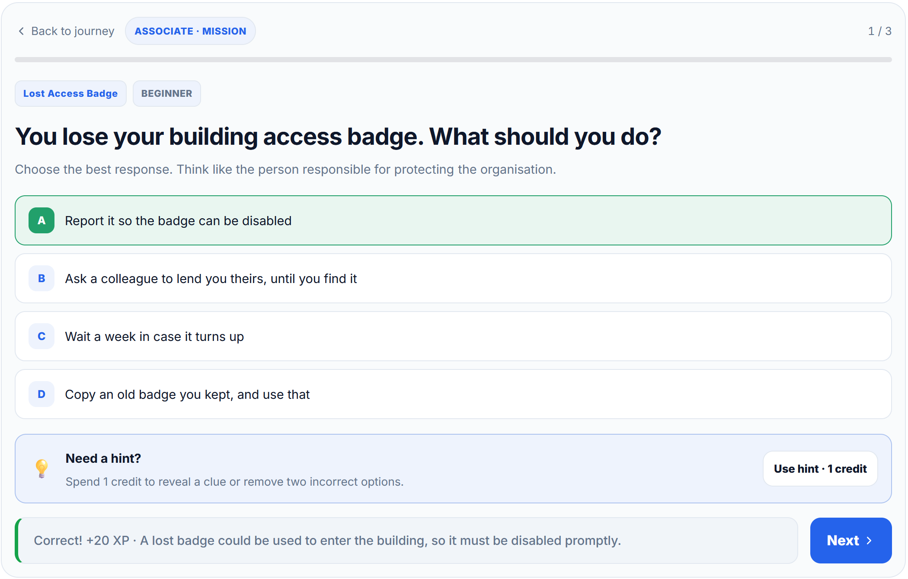
Relevant career paths include:
- IT Support Technician
- Junior Security Analyst
- Junior GRC Analyst
- Information Security Compliance Assistant
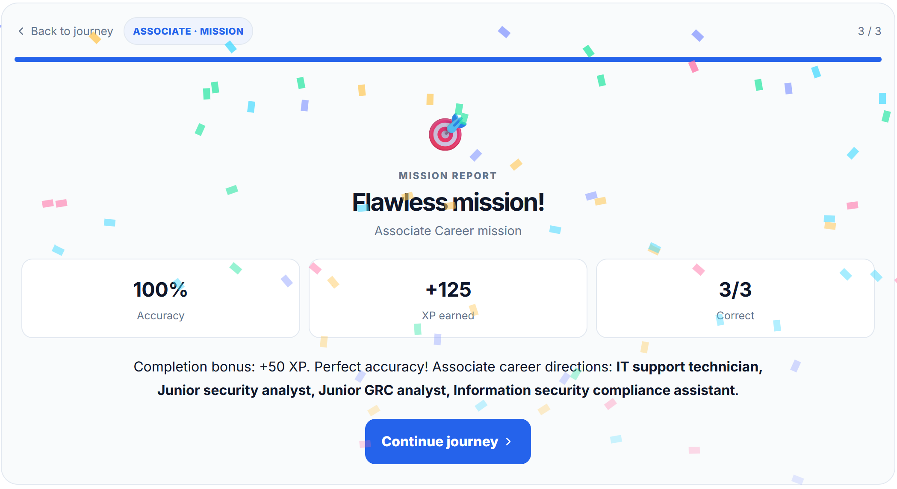
The goal: Build safe digital habits, understand fundamental security principles and develop a strong foundation for further learning.
🥈 2. Professional — Operational Security
Score: 600–1,799 XP
Now it's time to move beyond the fundamentals and start applying security knowledge to everyday operational scenarios.
At this level, you'll explore how security professionals approach operational risks, investigate alerts, follow incident response procedures and support security controls.
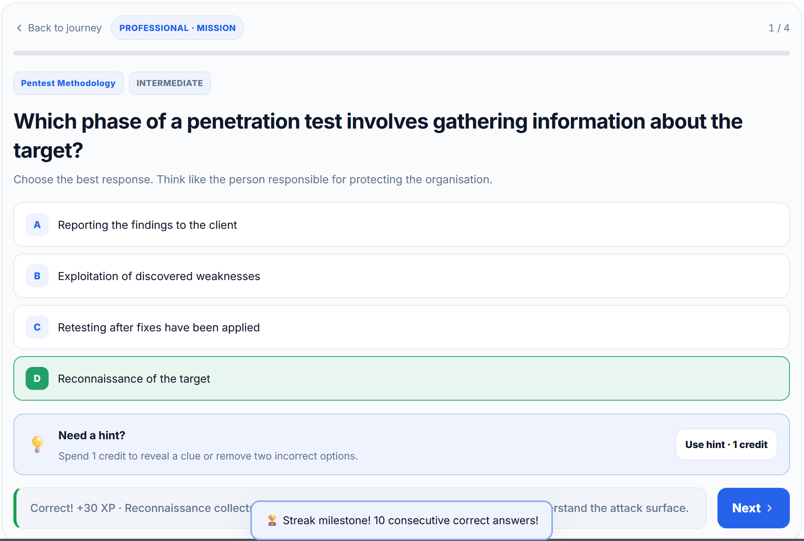
Relevant career paths include:
- SOC Analyst (Tier 1)
- Junior Incident Responder
- Vulnerability Analyst
- GRC Analyst
- IT Risk Analyst
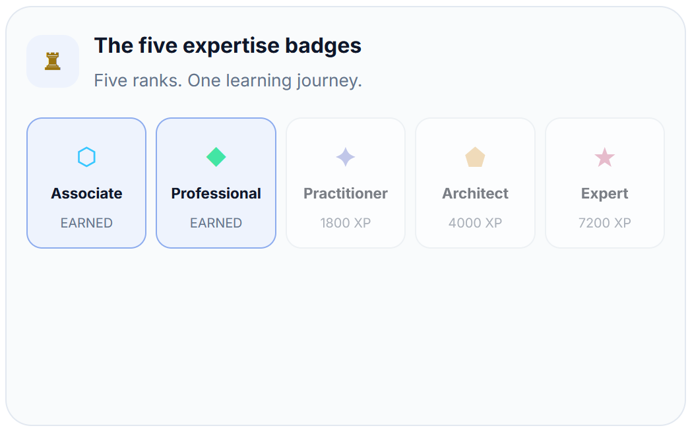
The goal: Develop operational security knowledge and demonstrate an understanding of routine security tasks, processes and risk management.
🥇 3. Practitioner — Hands-on Investigation
Score: 1,800–3,999 XP
Things are getting more interesting!
The Practitioner level challenges you to think more critically, investigate security problems and make practical technical decisions.
You'll encounter scenarios involving incident investigation, malware, vulnerability assessment, cloud security, application security and AI security.
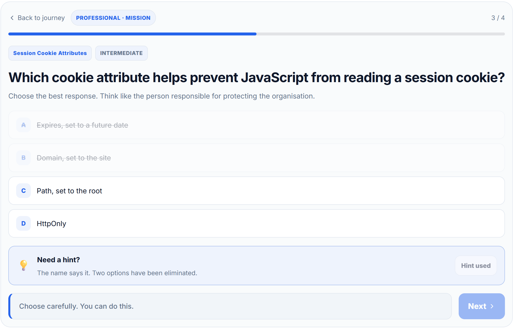
Relevant career paths include:
- SOC Analyst (Tier 2)
- Penetration Tester
- Cloud Security Analyst
- Application Security Engineer
- Cyber Risk Analyst
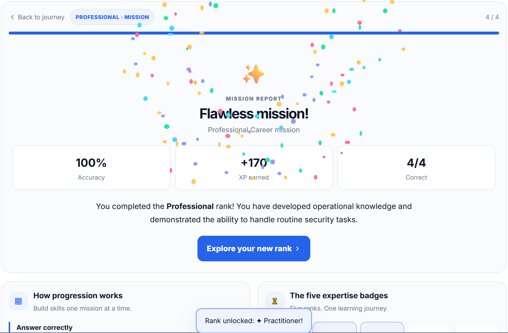
The goal: Strengthen practical investigation, technical assessment and problem-solving skills.
🎖️ 4. Architect — Designing Secure Systems
Score: 4,000–7,199 XP
Welcome to a level where security thinking becomes increasingly strategic and architectural.
The focus shifts towards understanding how individual security controls fit into a wider organisational security architecture.
You'll explore the relationship between technical security, organisational risk, governance, regulatory requirements and secure system design.
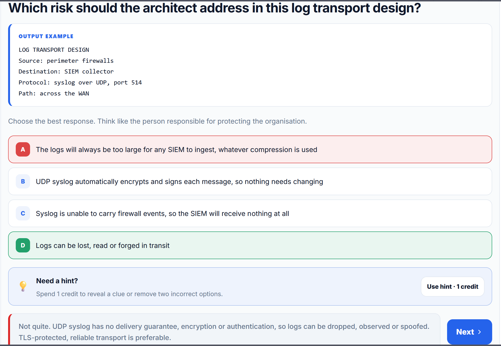
Relevant career paths include:
- Security Architect (Developing)
- Security Engineer
- Cloud Security Engineer
- DevSecOps Engineer
- GRC Consultant
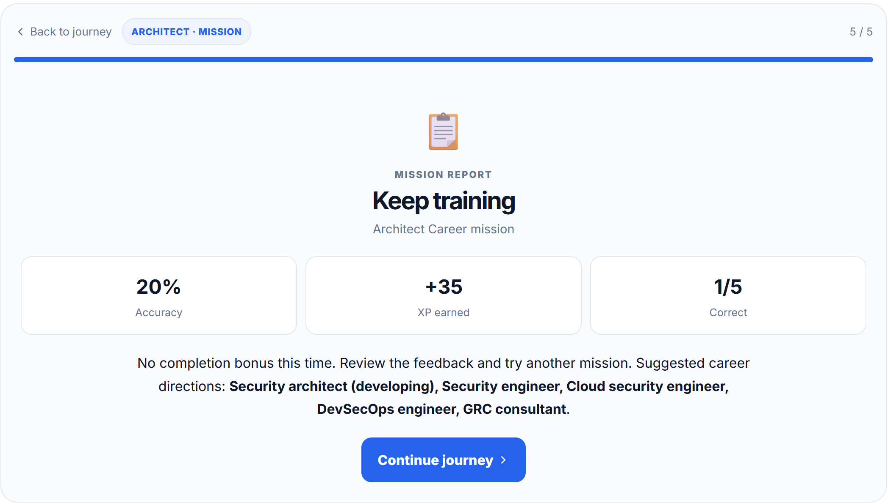
The goal: Understand how to connect technical security controls with organisational risks, governance and architectural decisions.
🏆 5. Expert — Strategic Security Judgement
Score: 7,200+ XP
You've reached the highest CyberQuiz rank!
The Expert level introduces more advanced challenges involving cybersecurity strategy, enterprise risk management, security governance, compliance and emerging threats.
It encourages you to look beyond individual technical vulnerabilities and consider the bigger picture: how organisations anticipate threats, manage risk, establish security priorities and make strategic decisions.
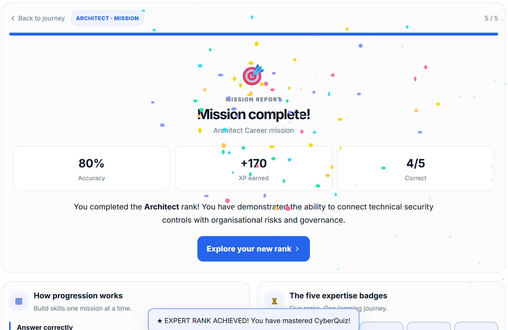
Relevant career paths include:
- Security Architect
- Incident Response Lead
- Security Team Lead
- GRC Manager
- Chief Information Security Officer (CISO)
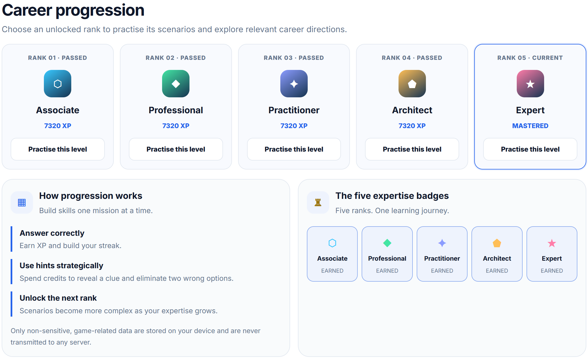
The goal: Develop and demonstrate strategic security judgement across technical, operational and organisational security challenges.
And remember: reaching Expert is an achievement within CyberQuiz, not a professional certification or a substitute for the experience and qualifications required for these roles.
Missions: Your Roadmap to the Next Rank
So, how do you actually progress through CyberQuiz? That's where missions come in!
Each rank contains a dedicated mission with a set number of questions. Your objective is to complete the mission and earn XP towards your next milestone.
The number of questions increases as you progress, introducing additional challenges at the higher ranks.
- Associate: 3 questions
- Professional: 4 questions
- Practitioner: 5 questions
- Architect: 5 questions
- Expert: 5 questions
This creates a progressive learning experience: start with the fundamentals, develop your operational understanding, tackle practical investigations and eventually explore more advanced architectural and strategic challenges.
Every mission is another opportunity to test your understanding and accumulate XP.
The objective isn't simply to finish a mission. It's to learn something valuable while progressing towards your next rank.
XP: Every Point Takes You Closer to Your Next Rank
CyberQuiz uses an experience points (XP) system to track your progression.
As you work through missions and earn XP, your score increases and you move closer to the next rank.
Here's a quick overview of the progression thresholds:
- 0 XP: Associate
- 600 XP: Professional
- 1,800 XP: Practitioner
- 4,000 XP: Architect
- 7,200 XP: Expert
Every point contributes to your journey. Keep completing missions, improving your knowledge and working towards the next milestone.
Streaks: Keep the Momentum Going!
Here's another feature designed to make learning a little more rewarding: Streaks!
CyberQuiz tracks your streak as you answer questions correctly. The more consistently you get your answers right, the longer your streak becomes.
But streaks aren't just about bragging rights. They also come with a useful reward!
For every three consecutive correct answers, you earn one hint credit, up to a maximum of nine hint credits.
These credits can be used to obtain hints when you encounter a challenging question.
In other words, maintaining a good streak helps you build up a little extra assistance for the challenges ahead.
CyberQuiz also keeps track of your best streak throughout your journey, allowing you to see your personal record and challenge yourself to beat it.
So, how long can you keep the streak alive? Three correct answers? Six? Ten? More?
Every streak is another reason to stay focused and keep improving!
Daily Challenge: Five Questions, One Chance a Day!
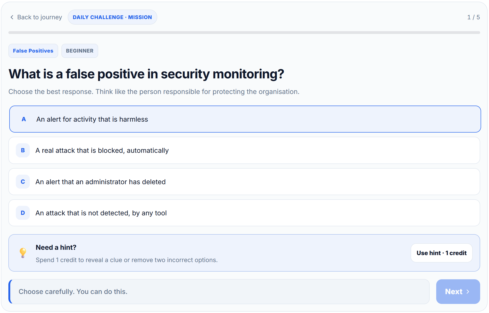
Want an additional challenge beyond your regular missions? Meet the Daily Challenge.
This feature gives you the opportunity to answer five cybersecurity questions every day and earn additional XP towards your overall progression.
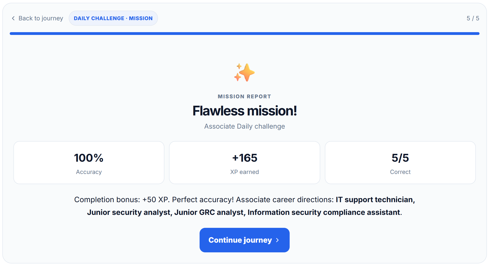
The Daily Challenge is available once per day, making it a great way to build a consistent learning habit and return to CyberQuiz regularly.
Whether you're brushing up on security fundamentals, testing your understanding of cloud security or exploring emerging threats, the Daily Challenge gives you another opportunity to put your knowledge to the test.
Five questions might not sound like much, but consistency matters!
Make it part of your daily routine: five questions, a little more knowledge and some extra XP towards your next rank.
Practice Previous Missions: Keep Sharpening Your Skills!
Reached a higher rank but want to revisit some of the challenges from previous levels? No problem!
CyberQuiz allows you to replay missions from lower ranks whenever you want. Whether you want to refresh your cybersecurity knowledge, revisit a challenging scenario or simply practise what you've learned, those missions remain available.
However, there's one important distinction: replaying missions from lower ranks is strictly for practice. Once you've progressed beyond a rank, replaying its missions will not award additional XP, bonus rewards or hint credits.
Your progression rewards are reserved for eligible missions at your current rank and new challenges. You can still revisit previous missions to reinforce your knowledge, but your earned progress remains protected.
Learn, revisit, practise and improve. Because in cybersecurity, continuous learning is just as important as moving up the ranks!
More Than Just Questions: Other Key Features
Alongside missions, XP, streaks and daily challenges, CyberQuiz includes additional features to make the learning experience more interactive.
1. Topic-Based Questions
Explore a variety of cybersecurity domains and test your knowledge across different areas, including:
- Core security awareness
- Phishing and social engineering
- Password security, authentication and Identity and Access Management (IAM)
- Cryptography
- Cloud security
- Secure development and application security
- Incident response and malware analysis
- Penetration testing
- Security architecture
- Governance, Risk and Compliance (GRC)
- Artificial Intelligence (AI) and Large Language Model (LLM) security
- And much more!
This gives you the opportunity to explore different areas of cybersecurity rather than focusing on just one discipline.
2. Explanations: Learn From Every Answer
Getting an answer wrong isn't the end of the world. In fact, it can be one of the most valuable parts of learning.
CyberQuiz provides explanations to help you understand why an answer is correct and reinforce the underlying cybersecurity concept.
The objective isn't simply to memorise the correct answer. It's to understand the reasoning behind it so you can apply that knowledge in real-world situations.
3. Hints: A Little Help Along the Way
Stuck on a question? No problem!
Use the hints feature to get guidance when you need it. It's designed to help you think through a question without immediately giving away the answer.
And remember: your streak rewards can help you earn additional hint credits along the way.
How to Get the Most Out of CyberQuiz
Here are a few suggestions to make your CyberQuiz experience more rewarding:
- Start with the fundamentals. Build a solid foundation before moving towards more advanced topics.
- Complete your missions. Work through the questions at each rank and accumulate XP towards your next milestone.
- Don't rush through questions. Take time to understand the scenarios and consider why an answer is correct.
- Use your hints wisely. Save your hint credits for questions where you genuinely need a little guidance.
- Keep your streak alive. Challenge yourself to maintain consecutive correct answers and earn additional hints.
- Take the Daily Challenge. Return every day for five additional questions and an opportunity to earn more XP.
- Read the explanations. Even when you get an answer right, the explanation can reinforce your understanding.
- Learn from mistakes. Every incorrect answer is an opportunity to identify a knowledge gap and improve.
Where Is Your Progress Saved?
You don't need to create an account just to keep track of your CyberQuiz journey.
Game progress, your current high score and associated gameplay records are stored locally in your browser using localStorage.
This allows your progress to persist across page refreshes and browser sessions without requiring a server-side account.
Keep in mind that locally stored progress is associated with the browser and device you're using. Clearing your browser's site data or switching devices may remove or prevent access to that progress.
Why I Created CyberQuiz
I believe cybersecurity education should be accessible, engaging and connected to practical situations.
Cybersecurity is too important to be confined to lengthy documentation, theoretical discussions and endless PowerPoint presentations!
We need to make learning more interactive and encourage people to think about security in their everyday lives and professional environments.
That's the thinking behind CyberQuiz. I wanted to create something that combines learning, curiosity, challenge and a little bit of competition.
The missions give you goals to work towards. XP gives you a sense of progression. Streaks reward consistency. Hint credits give you a helping hand. And the Daily Challenge gives you a reason to come back tomorrow.
Whether you're an IT professional, a cybersecurity student, someone working in GRC, a security enthusiast or simply someone who wants to become more security-aware, there's something to explore.
Cybersecurity doesn't have to be boring. Learn something, challenge yourself, make mistakes, improve and have fun along the way!
Michael Tchuindjang — CyberQuiz: Learn. Challenge. Progress.
Ready to Take the Challenge?
Enough reading about cybersecurity. It's time to put your knowledge to the test!
Head over to my personal website, launch CyberQuiz and see where you stand.
Start your first mission, earn some XP, build your streak and don't forget to come back for the Daily Challenge.
Will you start as an Associate and work your way up? Or do you already have what it takes to reach Expert?
There's only one way to find out!
Play CyberQuiz. Challenge your knowledge. Strengthen your security awareness. Earn your XP. And most importantly, enjoy the journey!
Disclaimer: CyberQuiz is an independent educational project designed to support cybersecurity awareness and knowledge development. Its ranks represent learning milestones based on quiz scores, not accredited professional certifications, formal qualifications or guarantees of professional competence. Suggested job titles illustrate areas of career relevance and do not imply qualification or readiness for those roles.
Making cybersecurity a little less intimidating, a lot more engaging, and always worth learning.
Michael Tchuindjang